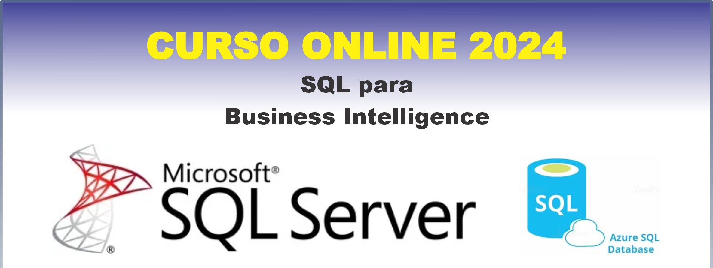

✅ INSCRIPCIÓN : https://forms.gle/rHj7KsVs2YqAy2zz6
✅ Costo Total: 300.000gs
Incluyen: Materiales + Grabaciones + Certificado de 40 horas
✅ Hora: 19 a 21.40hs
✅ Fechas: Jueves 5, 12 , 19 y 26 de setiembre
"Descuento especial para grupos de 2 o más personas"
- 2 pers. 250mil c/u
- 3 pers. 200mil c/u
- 4 pers. o más 180mil c/u
✅ Formas de Pago:
Transf. bancaria:
Banco Itaú
Cuenta N° 720005407
Titular: Oscar González Frutos
CI: 3584172
Giros Tigo:
0983 352 932
✅ Enviar comprobante aquí.
✅ Escribir al WhatsApp: https://wa.me/595983352932
DOCENTE: Oscar González Frutos
Curso SQL Server para Business Intelligence
Sesión 1: Fundamentos de SQL Server y Consultas Básicas
Introducción a SQL Server y su Rol en BI
- Overview de SQL Server y sus componentes principales.
- Instalación y configuración básica de SQL Server Management Studio (SSMS).
- Conexión a una base de datos en SQL Server.
Consultas Básicas en SQL Server
- SELECT: Extracción de datos desde tablas.
- Uso de WHERE para filtrar datos.
- Ordenamiento de resultados con ORDER BY.
- Ejemplos prácticos utilizando bases de datos de ejemplo como AdventureWorks.
Funciones Agregadas y Agrupación de Datos
- Uso de COUNT, SUM, AVG, MIN, MAX.
- Agrupación de resultados con GROUP BY.
- Filtrado de grupos con HAVING.
Tareas Prácticas
- Ejercicio: Creación de consultas básicas para obtener información clave.
- Práctica: Uso de funciones agregadas en un contexto de BI.
Sesión 2: Combinación y Manipulación de Datos en SQL Server
Joins y Combinaciones de Tablas
- INNER JOIN, LEFT JOIN, RIGHT JOIN, FULL JOIN.
- Aplicación práctica de joins en consultas sobre múltiples tablas.
- Creación de informes combinando datos de diferentes fuentes.
Subconsultas y Tablas Derivadas
- Uso de subconsultas en SELECT, FROM y WHERE.
- Creación y uso de tablas derivadas.
- Ejemplos de subconsultas correlacionadas en escenarios de BI.
Manipulación de Datos en SQL Server
- Inserción de datos con INSERT INTO.
- Actualización de registros con UPDATE.
- Eliminación de datos innecesarios con DELETE.
Tareas Prácticas
- Ejercicio: Combina y manipula datos para crear un informe detallado.
- Práctica: Utiliza subconsultas y tablas derivadas para simplificar consultas complejas.
Sesión 3: Funciones Avanzadas y Optimización de Consultas en SQL Server
Funciones Avanzadas en SQL Server
- Funciones de cadena (e.g., CONCAT, SUBSTRING) y de fecha (e.g., GETDATE, DATEADD).
- Uso de funciones de ventana (e.g., ROW_NUMBER, RANK) para análisis detallados.
- CASE y expresiones condicionales para crear columnas calculadas.
Optimización de Consultas
- Introducción a los índices y su impacto en el rendimiento.
- Análisis de planes de ejecución con SSMS.
- Técnicas de optimización: estadísticas, índices cubiertos, y particionamiento.
Procedimientos Almacenados y Vistas
- Creación de procedimientos almacenados para automatizar consultas.
- Implementación y uso de vistas para simplificar la consulta de datos.
- Ejemplos de cómo los procedimientos y vistas pueden mejorar la eficiencia en BI.
Tareas Prácticas
- Ejercicio: Optimiza una consulta existente y analiza su rendimiento.
- Práctica: Crea un procedimiento almacenado y una vista para resolver un problema de negocio.
Sesión 4: Integración de SQL Server con Herramientas de BI y Proyecto Final
Integración de SQL Server con Power BI
- Configuración de una conexión a SQL Server desde Power BI.
- Importación y transformación de datos utilizando Power Query en Power BI.
- Creación de un modelo de datos y visualizaciones básicas en Power BI.
Automatización y Programación de Consultas en SQL Server
- Uso de SQL Server Agent para la automatización de tareas y consultas.
- Creación de trabajos (jobs) programados para generación de informes.
- Configuración de alertas y monitoreo de eventos.
Proyecto Final
- Desarrollo de un proyecto completo que combine los conocimientos adquiridos.
- Creación de un dashboard interactivo en Power BI, alimentado por datos de SQL Server.
- Presentación del proyecto final y discusión de los resultados.
Cierre y Discusión
- Resumen de los principales conceptos y técnicas aprendidas.
- Discusión sobre cómo aplicar SQL Server en proyectos de BI.
- Sesión de preguntas y respuestas para aclarar dudas.
Metodología de Enseñanza
✅ 100% online en vivo, interactuando docente y alumnos:
- Tutorías personalizadas para resolver dudas y guiar el aprendizaje.
- Opción para que los alumnos trabajen con sus propias bases de datos.
- Clases grabadas disponibles para repasar el contenido.
- Materiales de apoyo descargables para seguir el curso.
- Ejercicios prácticos para aplicar los conceptos aprendidos.
- Sesiones de preguntas y respuestas para aclarar conceptos en tiempo real.